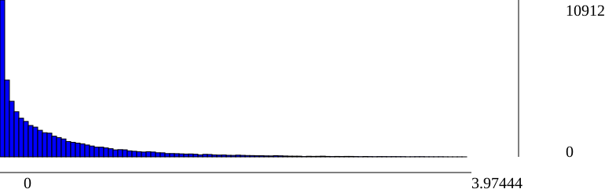

SFM report.
Dataset info:
#views: 27
#poses: 25
#intrinsics: 1
#tracks: 12350
#residuals: 29173
Track length statistics:
| IdView | Basename | #Observations | Residuals min | Residuals median | Residuals mean | Residuals max |
| 0 | 001 | 1675 | 0.000251014 | 0.493894 | 0.682802 | 3.65529 |
| 1 | 002 | 1640 | 3.76889e-05 | 0.631681 | 0.812324 | 3.72757 |
| 2 | 003 | 1334 | 0.000111543 | 0.428575 | 0.620459 | 3.92679 |
| 3 | 004 | 685 | 0.000525813 | 0.354759 | 0.586073 | 3.3596 |
| 4 | 005 | 222 | 0.000538977 | 0.430477 | 0.595814 | 2.60541 |
| 5 | 006 | 849 | 8.21412e-05 | 0.121108 | 0.247179 | 2.92965 |
| 6 | 007 | 1510 | 7.18662e-05 | 0.069394 | 0.179685 | 2.95661 |
| 7 | 008 | 1385 | 1.63475e-06 | 0.0679555 | 0.176055 | 2.8341 |
| 8 | 009 | 383 | 0.000359622 | 0.0873023 | 0.199814 | 2.04814 |
| 9 | 010 | 440 | 0.000152539 | 0.199044 | 0.391888 | 3.72245 |
| 10 | 011 | 1602 | 3.55403e-05 | 0.120324 | 0.283756 | 3.72237 |
| 11 | 012 | 3063 | 3.00641e-06 | 0.221965 | 0.380488 | 3.52183 |
| 12 | 013 | 1947 | 1.49775e-05 | 0.193099 | 0.401081 | 3.80628 |
| 13 | 014 | 1716 | 1.45898e-05 | 0.153492 | 0.323448 | 3.41714 |
| 14 | 015 | 1710 | 4.96726e-05 | 0.237604 | 0.393547 | 3.97444 |
| 15 | 016 | 1803 | 4.17356e-05 | 0.158911 | 0.330423 | 3.76988 |
| 16 | 017 | 325 | 1.40601e-05 | 0.318136 | 0.532752 | 3.18387 |
| 17 | 018 | 320 | 0.00031482 | 0.325842 | 0.532943 | 2.91855 |
| 18 | 019 | 578 | 0.00020793 | 0.357004 | 0.519888 | 3.63932 |
| 19 | 020 | 1126 | 6.28478e-05 | 0.396182 | 0.564359 | 3.5079 |
| 20 | 021 | 1965 | 9.24394e-05 | 0.442308 | 0.619575 | 3.77364 |
| 21 | 022 | 931 | 0.000192714 | 0.409054 | 0.60349 | 3.66688 |
| 22 | 023 | 160 | 8.55398e-05 | 0.391315 | 0.589537 | 3.18394 |
| 23 | 024 |
| 24 | 025 |
| 25 | 026 | 52 | 0.0058254 | 0.220046 | 0.443611 | 2.88949 |
| 26 | 027 | 1752 | 0.000246139 | 0.34242 | 0.591678 | 3.85265 |
SfM Scene RMSE: 0.717601
Residuals histogram
